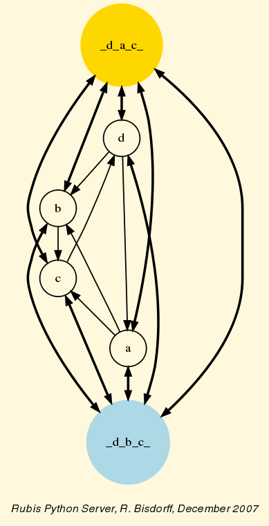

Rubis Outranking Digraph XML to HTML file converter
XML stored rubisOutrankingDigraph instance
| Name: | /var/rubisServerData/Solutions/outrankingDigraph-uOx6s0a8QLdRin9O.xml |
| Category: | Outranking |
| Subcategory: | Rubis choice |
| Author: | Bisdorff |
| Reference: | Generated by Rubis D2 plugin - based on Bisdorff's evaluations |
Summary
| # | Identifyer | Name | Comment |
| 1 | a | a | No comment |
| 2 | b | b | No comment |
| 3 | c | c | No comment |
| 4 | d | d | No comment |
| # | Identifyer | Name | Comment | Weight | Scale | Thresholds |
| indifference | weak preference | preference | weak veto | veto |
| 1 | g1 | g1 | No comment | 1.00 | (0.00,8.00) | (0.00,0.00) | | (1.00,0.00) | | |
| 2 | g2 | g2 | No comment | 2.00 | (0.00,8.00) | (0.00,0.00) | | (1.00,0.00) | | |
| 3 | g3 | g3 | No comment | 2.50 | (0.00,8.00) | (0.00,0.00) | | (1.00,0.00) | | |
| criterion | a | b | c | d |
| g1 | 8.00 | 6.00 | 4.00 | 2.00 |
| g2 | 4.00 | 2.00 | 8.00 | 6.00 |
| g3 | 6.00 | 4.00 | 2.00 | 8.00 |
Valuation domain of the outranking credibility
| Maximum - certainly validated | 5.50 |
| Median - indeterminate | 0.00 |
| Minimum - certainly not validated | -5.50 |
| (x S y) | a | b | c | d |
| a | 0.00 | 5.50 | 1.50 | -3.50 |
| b | -5.50 | 0.00 | 1.50 | -3.50 |
| c | -1.50 | -1.50 | 0.00 | 0.50 |
| d | 3.50 | 3.50 | -0.50 | 0.00 |
( Black arrows indicate outranking situations supported by a criteria coalition
of positive significance, i.e. gathering more than 50% of the global criteria significance weights.
Empty arrow heads indicate an indeterminate outranking situation.)

| Coca digraph actions |
| # | Identifyer | Name | Comment |
| 1 | _d_a_c_ | chordless odd circuit | Rubis construction |
| 2 | _d_b_c_ | chordless odd circuit | Rubis construction |
Good choice recommendations
| Choice set | Determinateness | Outrankingness | Outrankedness | Independence |
| {_d_a_c_,}
| 100.00 | 5.50 | 1.50 | 5.50 |
Potentially bad choices
| Choice set | Determinateness | Outrankedness | Outrankingness | Independence |
| {_d_b_c_,}
| 100.00 | 5.50 | 3.50 | 5.50 |
RB, December 2007, version 1.0-5